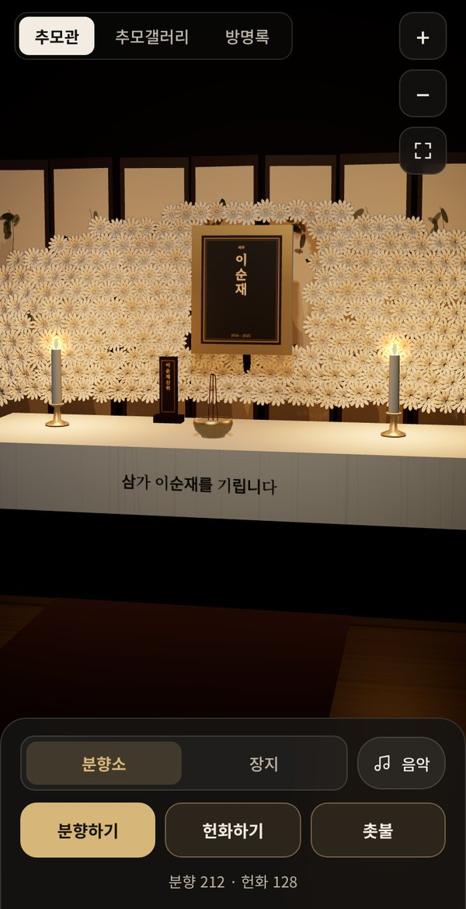
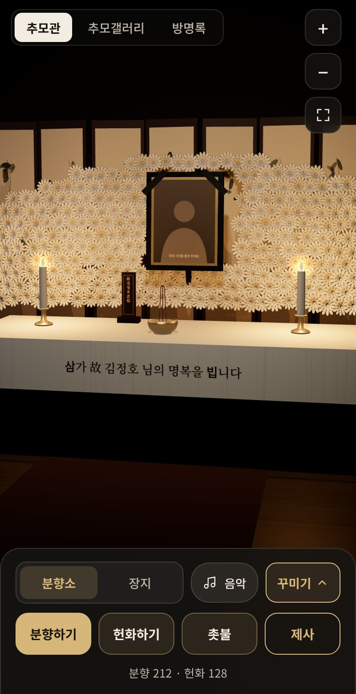
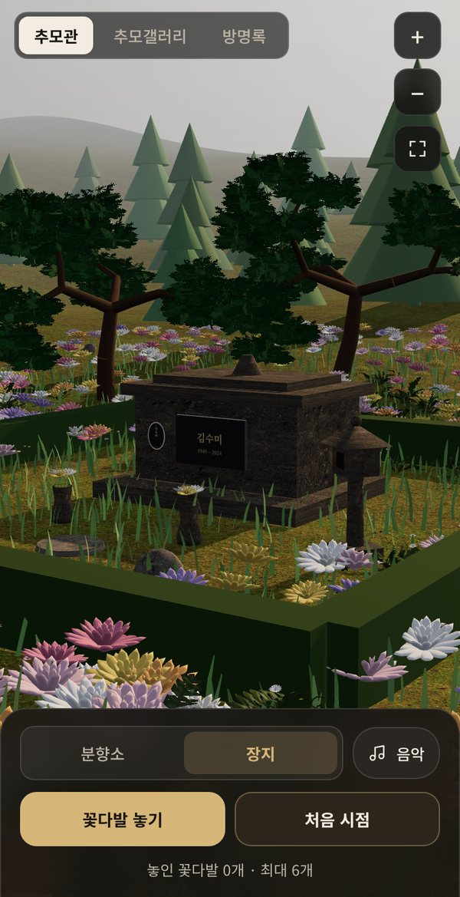
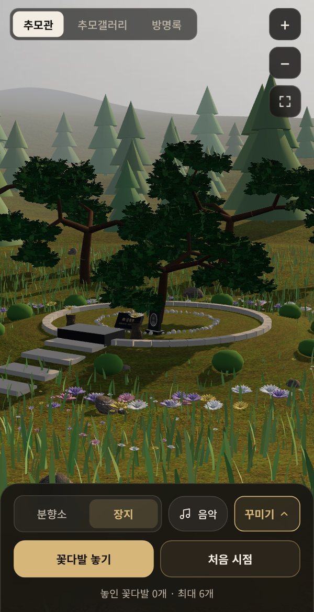
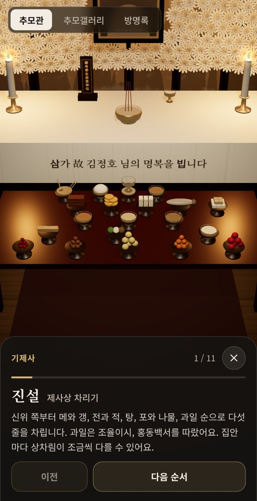
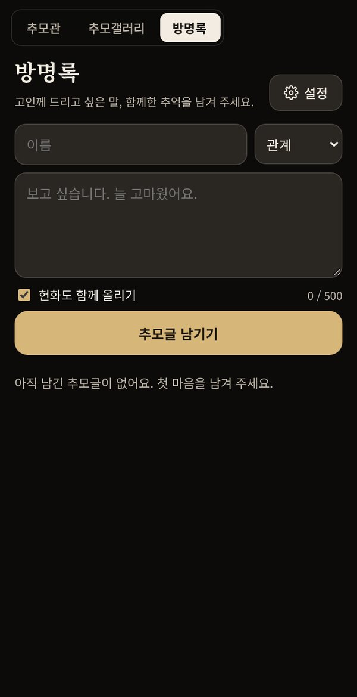

종교에 맞게 차려지는 3D 분향소
영정사진 둘레로 흰 국화 제단이 놓이고, 촛불과 향이 켜집니다. 손가락으로 돌려 보고 가까이 다가갈 수 있습니다.
- 향 피우기, 국화 올리기를 누구나 무료로
- 영정 액자는 검은 액자·금색 액자·원목 액자 중에서
- 국화 색과 제단의 풍성함을 가족이 고름

멀리 있어 자주 가지 못하는 산소, 바쁜 날에도 잊고 싶지 않은 기일. 공감 추모원은 휴대폰 안에 3D 분향소와 장지를 모시고, 가족의 뜻대로 꾸며 언제든 찾아뵙는 곳입니다.
향을 피우고 국화를 올리고, 기일에는 제사 순서를 따라 절을 올립니다. 사진과 영상은 추모갤러리에 모으고, 찾아온 분들은 방명록에 마음을 남깁니다.
안드로이드 출시 준비 중 · 구글 플레이 심사를 앞두고 있습니다.

공감 추모원이 직접 모신 공개 추모관입니다. 누구나 들어가 분향하고 국화를 올릴 수 있습니다. 장지는 기사로 확인된 실제 장례 방식과 모신 곳에 맞춰 꾸몄습니다.
공개 추모관에는 언론에 공개된 사실만 담습니다. 유족께서 원하지 않으시면 연락 주시는 즉시 내립니다. 새로 모실 분은 계속 더해 갑니다.
가입이나 결제 없이 바로 시작할 수 있습니다. 추모관을 늘리는 데에는 요금을 받지 않습니다.
성함, 생년월일, 기일과 종교를 적습니다. 음력 기일도 매년 양력 날짜로 바꿔 드립니다.
영정사진을 올리고 위치와 크기를 손가락으로 맞춥니다. 수목장, 봉분, 봉안묘 등 장지의 형식과 장소를 고릅니다.
기일 일주일 전, 전날, 당일에 알려 드리고, 알림을 누르면 그날의 제사 순서가 열립니다. 추모관 소식은 카카오톡으로 가족에게 전할 수 있습니다.
영정사진 둘레로 흰 국화 제단이 놓이고, 촛불과 향이 켜집니다. 손가락으로 돌려 보고 가까이 다가갈 수 있습니다.

수목장, 봉분 묘소, 자연장, 봉안묘, 가족묘, 왕릉형까지 열 가지 형식. 소나무 숲, 호숫가, 산사, 꽃동산 등 열 곳의 장소에 모십니다.


기제사, 불교 공양, 기독교 추도예배, 천주교 위령기도의 순서를 한 단계씩 안내합니다. 잔을 올리고 메에 숟가락을 꽂는 일은 화면이 하고, 절과 기도는 가족이 직접 올립니다.

바탕화면 위젯이 하늘나라에 가신 지 며칠째인지, 다음 기일까지 며칠 남았는지 알려 드립니다. 크기는 두 가지, 색은 어두운·밝은·투명 중에서 고릅니다.
가족이 가진 사진과 영상을 한곳에 모읍니다. 찾아온 분들은 이름과 관계를 남기고 국화와 함께 추모글을 올립니다. 방명록은 가족만 보게 닫아 둘 수도 있습니다.

추모관을 만들 때 고른 종교에 맞춰 제단과 순서가 달라집니다.
영정과 흰 국화, 촛불과 향. 헌화와 묵념.
위패와 향로, 술잔과 제사상. 기제사 순서와 축문.
영가 위패, 연등과 연꽃, 목탁과 염주. 공양 순서.
십자가와 헌화. 추도예배 순서와 찬송가 오르간 반주.
십자고상과 촛불. 위령기도 순서.
조문하러 오시는 분은 모두 무료입니다. 결제는 구글 플레이로만 받습니다.
| 무료0원 | 멤버십월 9,900원 · 연 49,000원 · 평생 199,000원 | |
|---|---|---|
| 분향·헌화·기일 알림·방명록 | 이용 가능 | 이용 가능 |
| 추모관 수 | 2개 | 20개 |
| 추모관마다 사진·영상 | 합쳐서 5개 (영상 1개) | 사진 300장 · 영상 10개 (2GB) |
| 가족과 함께 쓰기 | 30명까지 | 30명까지 |
| 분향소 액자·꽃·뒷배경·조명 | 기본 한 가지 | 모두 |
| 고급 장지·장소·석물·크기·추모목 | 포인트로 하나씩 (2배 가격) | 모두 포함 |
멤버십은 월 구독, 연 구독(월 구독보다 59% 저렴), 평생 이용권 중 고르실 수 있고 혜택은 모두 같습니다. 구독은 구글 플레이에서 언제든 해지할 수 있습니다. 무료로 쓰실 때는 고급 장지를 멤버십 가격의 2배 포인트로 하나씩 삽니다. 가족이나 지인에게 공유하면 100P(하루 3번)를 드리고, 포인트는 1,000P부터 씁니다. 매주 한두 가지 꾸미기를 반값에 드립니다.
추모관 만들기, 영정사진, 분향·헌화, 기일 알림, 방명록은 모두 무료이고, 추모관 2개를 만들어 추모관마다 사진·영상을 합쳐 5개까지 무료로 담을 수 있습니다. 더 많이 담거나 꾸미기를 모두 쓰시려면 멤버십을 이용해 주세요.
휴대폰에 먼저 저장되고, 초대한 가족이 함께 볼 수 있도록 암호로 보호된 저장소(Cloudflare R2)에도 보관됩니다. 가족이 아닌 분께는 영정사진과 가족이 고른 사진 5장·영상 1개만 보입니다.
네. 음력 기일을 적으시면 해마다 양력 날짜를 다시 계산해 일주일 전, 전날, 당일에 알려 드립니다. 2월 29일 같은 날짜도 처리합니다.
네. 아래 이메일로 연락 주시면 확인 즉시 내립니다. 사진이나 내용을 바꾸고 싶으신 경우에도 말씀해 주세요.
안드로이드를 먼저 출시하고, 아이폰은 그다음에 준비합니다. 출시 알림을 신청하시면 가장 먼저 알려 드립니다.
출시 소식을 받고 싶으시면 "출시 알림"이라고 적어 메일을 보내 주세요. 장례식장·추모공원과의 제휴, 공개 추모관 관련 유족의 요청도 같은 곳으로 받습니다.